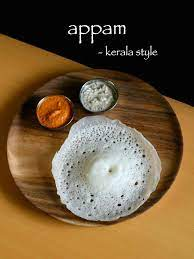
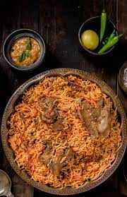

appam
Appam is a type of pancake, originating from South India, made with fermented rice batter and coconut milk, common in Kerala, Sri Lanka

Dosa
A dosa is a thin pancake or crepe originating from South India, made from a fermented batter predominantly consisting of lentils and rice.

biriyani
Biryani is a mixed rice dish originating among the Muslims of the Indian subcontinent. It is made with Indian spices, rice, and meat usually that of chicken, goat, lamb, prawn, fish